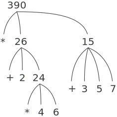

1.1.3 组合式的求值
本章的一个目标，就是要把与过程性思维有关的各种问题隔离出来。现在让我们考虑组合式的求值问题。解释器本身就是按照下面过程工作的。
- 要求值一个组合式，做下面的事情：
- 求值该组合式的各个子表达式。
- 将作为最左子表达式（运算符）的值的那个过程应用于相应的实际参数，所谓实际参数也就是其他子表达式（运算对象）的值。
即使是一条这样简单的规则，也显示出计算过程里的一些具有普遍性的重要问题。首先，由上面的第一步可以看到，为了实现对一个组合式的求值过程，我们必须先对组合式里的每个元素执行同样的求值过程。因此，在性质上，这一求值过程是递归的，也就是说，它在自己的工作步骤中，包含着调用这个规则本身的需要。
在这里应该特别注意，采用递归的思想可以多么简洁地描述深度嵌套的情况。如果不用递归，我们就需要把这种情况堪称相当复杂的计算过程。例如，对下列表达式求值：
(* (+ 2 (* 4 6))
(+ 3 5 7))
需要将求值规则应用于 4 个不同的组合式。如图 1-1 中所示，我们可以采用一棵树的形式，用图形表示这一组合式的求值过程，其中的每个组合式用一个带分支的结点表示，由它发出的分支对应于组合式里的运算符和各个运算对象。终端结点（即那些不再发出分支的结点）表示的是运算符或者数值。以树的观点看这种求值过程，可以设想那些运算对象的值向上穿行，从终端结点开始，而后在越来越高的层次中组合起来。一般而言，我们应该把递归看作一种处理层次性结构的（像树这样的对象）极强有力的技术。事实上，“值向上穿行”形式的求值形式是一类更一般的计算过程的一个例子，这种计算过程称为 树形积累 。

图 1-1 树形表示方法，其中显示了每个子表达式的值
进一步的观察告诉我们，反复地应用第一个步骤，总可以把我们带到求值中的某一点，在这里遇到的不是组合式而是基本表达式，例如数、内部运算符或者其他名字。处理这些基础情况的方式如下规定：
- 数的值就是它们所表示的数值。
- 内部运算符的值就是能完成相应操作的机器指令序列。
- 其他名字的值就是在环境中关联于这一名字的那个对象。
我们可以将第二种规定看作是第三种规定的特殊情况，为此秩序将像 + 和 * 一类的运算符也包含在全局环境里，并将相应的指令序列作为与之关联的“值”。对于初学者，应该指出的关键一点是，环境所扮演的角色就是用于确定表达式中各个符号的意义。在如 Lisp 这样的交互式语言里，如果没有关于有关环境的任何信息，那么说例如表达式 (+ x 1) 的值是毫无意义的，因为需要有环境为符号 x 提供意义（甚至需要它为符号 + 提供意义）。正如我们将要在第 3 章看到的，环境具有普遍性的概念，它为求值过程的进行提供了一种上下文，对于我们理解程序的执行起着极其重要的作用。
请注意，上面给出的求值规则并没有处理定义。例如，对 (define x 3) 的求值并不是将 define 应用于它的两个实际参数：其中的一个是符号 x 的值，另一个是 3 。这是因为 define 的作用就是为 x 关联一个值（也就是说， (define x 3) 并不是一个组合式）。
一般性求值规则的这种例外称为 特殊形式 ， define 是至今我们已经看到的唯一的一种特殊形式，下面还将看到另外一些特殊形式。每个特殊形式都有其自身的求值规则，各种不同种类的表达式（每种有着与之相关联的求值规则）组成了程序设计语言的语法形式。与大部分其他程序设计语言相比， Lisp 的语法非常简单。也就是说，对各种表达式的求值规则可以描述为一个简单的通用规则和一组针对不多的特殊形式的专门规则。